주택관리사보-2차 (2012-09-23 기출문제)
1과목: 주택관리관계법규
1. 주택법령상 관리사무소장의 업무 등 및 손해배상책임에 관한 설명으로 옳은 것은?
- 500세대 이상의 공동주택의 관리사무소장으로 배치된 주택관리사등은 손해배상책임을 보장하기 위하여 3천만원을 보장하는 보증보험 또는 공제에 가입하거나 공탁을 하여야 한다.
- 주택관리사등은 공제금ㆍ보증보험금 또는 공탁금으로 손해배상을 한 때에는 15일 이내에 보증보험 또는 공제에 다시 가입하거나 공탁금 중 부족하게 된 금액을 보전하여야 한다.
- 공제 또는 보증보험에 가입한 주택관리사등으로서 보증기간이 만료되어 다시 보증설정을 하려는 자는 그 보증기간 만료일 다음날까지 다시 보증설정을 하여야 한다.
- 주택관리사등은 관리사무소장의 업무를 집행하면서 과실로 입주자에게 재산상의 손해를 입힌 경우에는 그 손해를 배상할 책임이 없다.
- 관리사무소장은 그 배치 내용과 업무의 집행에 사용할 직인을 조례에서 정하는 바에 따라 시장ㆍ군수에게 신고하여야 한다.
(정답률: 알수없음)

2. 주택법령상 입주자대표회의의 의결사항과 공동주택 관리방법의 결정 등에 관한 설명으로 옳지 않은 것은?
- 단지안의 전기ㆍ도로ㆍ상하수도ㆍ주차장ㆍ가스설비ㆍ냉난방설비 및 승강기 등의 유지 및 운영기준은 입주자대표회의의 의결사항이다.
- 공용시설물의 사용료 부과기준의 결정은 입주자대표회의의 구성원 과반수의 찬성으로 의결한다.
- 공동주택 관리방법의 결정은 입주자대표회의의 의결 또는 전체 입주자등의 10분의 1이상이 제안하고, 전체 입주자등의 과반수가 찬성하는 방법에 따른다.
- 입주자등의 10분의 1 이상이 요청하는 때에는 입주자대표회의의 회장은 해당일부터 30일 이내에 입주자대표회의를 소집하여야 한다.
- 공동체 생활의 활성화 및 질서유지에 관한 사항은 입주자대표회의의 의결사항이다.
(정답률: 알수없음)
3. 주택법령 및 임대주택법령상 각종 위원회의 구성 등에 관한 설명으로 옳지 않은 것은?
- 국토해양부차관은 주택정책심의위원회의 위원이다.
- 시장ㆍ군수 또는 구청장은 주택관리사로서 관련 업무에 3년 이상 근무한 사람을 1명 이상 임대주택분쟁조정위원회의 위원으로 위촉하여야 한다.
- 공동주택관리분쟁조정위원회는 분쟁이 발생한 공동주택의 관리주체가 추천하는 자 2인을 포함하여 구성한다.
- 시장ㆍ군수 또는 구청장은 주택건설 또는 주택관리 분야에 관한 학식과 경험이 풍부한 자로서, 주택관리사로서 공동주택 관리사무소장의 직에 5년 이상 근무한 자 1명 이상을 분양가심사위원회의 민간위원으로 위촉한다.
- 국토해양부장관은 주택관리사로서 공동주택의 관리사무소장으로 10년 이상 근무한 자를 하자심사ㆍ분쟁조정위원회의 위원으로 위촉할 수 있다.
(정답률: 알수없음)
4. 주택법령상 공동주택의 관리 등에 관한 설명으로 옳지 않은 것은?
- 입주자대표회의가 공동주택을 주택관리업자에게 위탁관리하다가 자치관리로 관리방법을 변경할 경우에는 그 위탁관리의 종료일까지 자치관리기구를 구성하여야 한다.
- 사업주체로부터 공동주택을 관리할 것을 요구받은 입주자는 그 요구를 받은 날부터 3개월 이내에 입주자대표회의를 구성하여야 한다.
- 300세대의 아파트를 건설한 사업주체는 입주예정자의 전부가 입주할 때까지 그 아파트를 직접 관리하여야 한다.
- 입주자대표회의를 대표하는 자는 해당 공동주택의 관리방법이 결정된 경우에는 그 날부터 30일 이내에 국토해양부령으로 정하는 바에 따라 시장ㆍ군수 또는 구청장에게 신고하고, 사업주체에게 통지하여야 한다.
- 입주자대표회의는 해당 공동주택의 관리여건상 필요하다고 인정하는 경우에는 국토해양부령으로 정하는 바에 따라 500세대 이상의 단위로 구분하여 관리하게 할 수 있다.
(정답률: 알수없음)
5. 주택법령상 입주자대표회의의 구성 등에 관한 설명으로 옳지 않은 것은?
- 입주자대표회의는 4명 이상으로 구성하되, 동별 세대수에 비례하여 공동주택관리규약으로 정한 선거구에 따라 선출된 대표자로 구성한다.
- 동별 대표자의 입후보자가 1명인 경우에는 입주자등의 과반수가 투표하고 투표자의 과반수 찬성으로 동별 대표자를 선출한다.
- 동별 대표자의 임기는 3년으로 하되, 한 차례만 중임할 수 있다.
- 공동주택 관리와 관련하여 벌금 100만원 이상의 형을 선고받은 후 5년이 지나지 아니한 사람은 동별 대표자가 될 수 없다.
- 동별 대표자는 보통ㆍ평등ㆍ직접ㆍ비밀선거를 통하여 선출한다.
(정답률: 알수없음)
6. 주택법령상 장기수선계획과 장기수선충당금에 관한 설명으로 옳지 않은 것은?
- 입주자 과반수의 서면동의가 있더라도 장기수선충당금을 하자진단 및 감정에 드는 비용으로 사용할 수 없다.
- 입주자대표회의와 관리주체는 장기수선계획을 국토해양부령으로 정하는 바에 따라 조정할 수 있다.
- 관리주체는 장기수선계획에 따라 공동주택의 주요 시설의 교체 및 보수에 필요한 장기수선충당금을 해당 주택의 소유자로부터 징수하여 적립하여야 한다.
- 중앙집중식 난방방식의 공동주택을 건설ㆍ공급하는 사업주체는 대통령령으로 정하는 바에 따라 그 공동주택의 공용부분에 대한 장기수선계획을 수립하여야 한다.
- 장기수선충당금은 당해 공동주택의 사용검사일(단지안의 공동주택의 전부에 대하여 임시사용승인을 얻은 경우에는 임시사용승인일을 말한다)부터 1년이 경과한 날이 속하는 달부터 매월 적립한다.
(정답률: 알수없음)
7. 주택법령상 과태료부과 대상이 아닌 것은?
- 입주자의 자격 규정을 위반하여 주택을 공급받은 자
- 주택관리사등의 배치규정을 위반하여 주택관리사등을 배치하지 아니한 자
- 관리사무소장의 배치내용 및 업무의 집행에 사용할 직인을 신고하지 아니한 자
- 수립 또는 조정된 장기수선계획에 따라 주요 시설을 교체하거나 보수하지 아니한 입주자대표회의의 대표자
- 주택거래신고 내용의 조사 규정에 따라 신고인에게 제출을 요구한 거래대금지급증명자료를 제출하지 아니한 자
(정답률: 알수없음)
8. 주택법령상 주택건설사업의 시행에 관한 설명으로 옳은 것은?
- 지방자치단체는 그 지역의 특성, 주택의 규모 등을 고려하여 주택건설기준등의 범위에서 조례로 구체적인 기준을 정할 수 있다.
- 8천제곱미터의 대지에서 도시형생활주택 25세대의 주택건설사업을 시행하려는 자는 사업계획승인신청서를 특별시장ㆍ광역시장ㆍ특별자치도지사 또는 시장ㆍ군수에게 제출하고 사업계획승인을 받아야 한다.
- 주택건설사업계획의 승인을 받으려는 지방공사는 해당 주택건설대지의 소유권을 확보하여야 한다.
- 시ㆍ도지사는 바닥충격음 성능등급을 인정받은 제품이 인정받은 내용과 다르게 판매ㆍ시공된 경우에는 인정기관에게 과태료 및 영업정지 처분을 할 수 있다.
- 주택건설사업의 경우에는 건축물의 동별로 공사가 완료되었더라도 전체공사가 완료되지 않으면 임시사용승인을 받을 수 없다.
(정답률: 알수없음)
9. 주택법령상 다음 ( )안에 알맞은 것을 순서대로 묶은 것은?
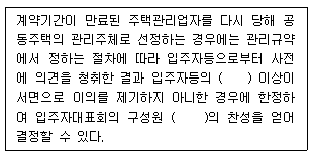
- 5분의 2 - 과반수
- 10분의 3 - 3분의 2 이상
- 5분의 1 - 과반수
- 5분의 1 - 3분의 2 이상
- 10분의 1 - 3분의 2 이상
(정답률: 알수없음)
10. 주택법령상 관리주체에 관한 설명으로 옳지 않은 것은?
- 관리주체는 다음 회계연도에 관한 관리비등의 사업계획 및 예산안을 매 회계연도 개시 1개월 전까지 제출하여 승인을 받아야 한다.
- 지방자치단체가 관리주체인 경우, 관리비가 체납되면 지방세 체납처분의 예에 따라 강제징수할 수 있다.
- 관리주체는 월별로 관리비등과 잡수입의 징수ㆍ사용ㆍ보관 및 예치 등에 관한 장부를 작성하여 이를 그 증빙자료와 함께 회계연도 종료 후 5년간 보관하여야 한다.
- 관리주체는 주택관리업자의 선정결과를 다음 달 말일까지 국토해양부장관이 지정하는 인터넷 홈페이지에 공개하여야 한다.
- 관리주체는 하자의 원인이 사업주체외의 자에게 있는 경우, 안전진단 실시비용은 수선유지비 및 위탁관리수수료와 구분하여 징수하여야 한다.
(정답률: 알수없음)
11. 주택법령상 공동주택관리기구에 관한 설명으로 옳지 않은 것은?
- 입주자인 자치관리기구의 직원은 입주자대표회의의 구성원을 겸할 수 있다.
- 자치관리기구는 입주자대표회의의 감독을 받는다.
- 공동관리하거나 구분관리하는 경우에는 공동관리 또는 구분관리 단위별로 공동주택관리기구를 설치하여야 한다.
- 입주자대표회의는 자치관리기구의 관리사무소장을 그 구성원 과반수의 찬성으로 선임한다.
- 자치관리기구는 각 1대 이상의 망원경, 카메라 등 건축물 안전점검의 보유장비를 갖추어야 한다.
(정답률: 알수없음)
12. 도시 및 주거환경정비법령상 시공자의 선정 등에 관한 설명으로 옳지 않은 것은?
- 사업시행자는 선정된 시공자와 공사에 관한 계약을 체결할 때에는 기존 건축물의 철거 공사에 관한 사항을 포함하여야 한다.
- 누구든지 시공자 선정과 관련하여 금품, 향응 또는 그 밖의 재산상 이익을 제공하거나 제공의사를 표시하거나 제공을 약속하는 행위를 할 수 없다.
- 조합원이 100명 이하인 정비사업의 경우에는 조합총회에서 정관으로 정하는 바에 따라 건설업자 또는 등록사업자를 시공자로 선정할 수 있다.
- 시장ㆍ군수가 직접 정비사업을 시행하는 경우 사업시행자는 사업시행인가를 받은 후 건설업자 또는 등록사업자를 시공자로 선정하여야 한다.
- 도시환경정비사업을 토지등소유자가 시행하는 경우에는 사업시행인가를 받은 후 규약(토지등소유자가 자치적으로 정하여 운영하는 규약)으로 정하는 바에 따라 건설업자 또는 등록사업자를 시공자로 선정하여야 한다.
(정답률: 알수없음)
13. 도시재정비 촉진을 위한 특별법령상 재정비촉진계획의 수립 및 결정에 관한 설명으로 옳지 않은 것은?
- 재정비촉진사업 관계 법률에 따라 재정비촉진구역 지정의 효력이 상실된 경우에는 해당 재정비촉진구역에 대한 재정비촉진계획 결정의 효력도 상실된 것으로 본다.
- 존치정비구역이란 재정비촉진구역의 지정 요건에 해당하지 아니하거나 기존의 시가지로 유지ㆍ관리할 필요가 있는 구역을 말한다.
- 재정비촉진계획에 따른 기반시설의 설치계획은 재정비촉진사업을 서로 연계하여 광역적으로 수립하여야 한다.
- 재정비촉진계획에는 기반시설의 비용분담계획, 상가의 분포 및 수용계획 등이 포함된다.
- 시장ㆍ군수ㆍ구청장은 재정비촉진계획을 수립하여 특별시장ㆍ광역시장 또는 도지사에게 결정을 신청하여야 한다.
(정답률: 알수없음)
14. 집합건물의 소유 및 관리에 관한 법률상 구분소유 등에 관한 설명으로 옳지 않은 것은?
- 대지사용권이란 구분소유자가 전유부분을 소유하기 위하여 건물의 대지에 대하여 가지는 권리를 말한다.
- 구분소유자는 그가 가지는 전유부분과 분리하여 대지사용권을 처분할 수 없다. 다만, 규약으로써 달리 정하는 경우에는 그러하지 아니하다.
- 공유자가 공용부분에 관하여 다른 공유자에 대하여 가지는 채권은 그 특별승계인에 대하여 행사할 수 없다.
- 전유부분이 속하는 1동의 건물의 설치 또는 보존의 흠으로 인하여 다른 자에게 손해를 입힌 경우에는 그 흠은 공용부분에 존재하는 것으로 추정한다.
- 공용부분에 대한 공유자의 지분은 그가 가지는 전유부분의 처분에 따른다.
(정답률: 알수없음)
15. 소방시설 설치ㆍ유지 및 안전관리에 관한 법령상 방염대상물품이 아닌 것은?
- 제조 또는 가공공정에서 방염처리를 한 카페트
- 제조 또는 가공공정에서 방염처리를 한 무대용 합판
- 제조 또는 가공공정에서 방염처리를 한 전시용 섬유판
- 제조 또는 가공공정에서 방염처리를 한 두께가 2밀리미터 미만인 벽지류로서 종이벽지
- 제조 또는 가공공정에서 방염처리를 한 암막ㆍ무대막
(정답률: 알수없음)
16. 소방시설 설치ㆍ유지 및 안전관리에 관한 법령상 특정소방대상물에 관한 설명으로 옳지 않은 것은?
- 특정소방대상물은 소방시설을 설치하여야 하는 소방대상물로서 대통령령으로 정하는 것을 말한다.
- 아파트와 기숙사는 특정소방대상물이다.
- 관리업자가 소방시설등의 점검을 마친 경우 점검일시, 점검자, 점검업체 등 점검과 관련된 사항을 점검기록표에 기록하고 이를 해당 특정소방대상물에 부착하여야 한다.
- 특정소방대상물의 관계인은 그 대상물에 설치되어 있는 소방시설 등에 대하여 정기적으로 자체점검을 하거나 관리업자 또는 행정안전부령으로 정하는 기술자격자로 하여금 정기적으로 점검하게 하여야 한다.
- 특정소방대상물에 소화기구를 설치하려는 자는 지진이 발생할 경우 소방시설이 정상적으로 작동될 수 있도록 소방방재청장이 정하는 건축물 구조기준에 맞게 소방시설을 설치하여야 한다.
(정답률: 알수없음)
17. 건축법령상 건축물과 분리하여 공작물을 축조할 때 특별자치도지사 또는 시장ㆍ군수ㆍ구청장에게 신고를 하여야 하는 공작물이 아닌 것은?
- 높이 3미터인 담장
- 높이 7미터인 장식탑
- 높이 5미터인 광고탑
- 높이 9미터인 고가수조
- 높이 4미터인 굴뚝
(정답률: 알수없음)
18. 건축법령상 위반 건축물 등에 대한 조치 등과 이행강제금 등에 관한 설명으로 옳지 않은 것은?
- 허가권자는 대지나 건축물이 건축법 또는 건축법에 따른 명령이나 처분에 위반되면 건축법에 따른 허가를 취소하거나 그 건축물의 건축주등에게 공사의 중지를 명할 수 있다.
- 허가권자는 시정명령을 받은 자가 이를 이행하지 아니하면 시정명령이 이행될 때까지 1년에 6회 이내의 범위에서 반복하여 이행강제금을 부과ㆍ징수할 수 있다.
- 허가권자는 시정명령을 받은 자가 이를 이행하면 새로운 이행강제금의 부과를 즉시 중지하되, 이미 부과된 이행강제금은 징수하여야 한다.
- 국토해양부장관은 시ㆍ도지사 또는 시장ㆍ군수ㆍ구청장이 한 명령이나 처분이 건축법이나 건축법에 따른 명령이나 처분 또는 조례에 위반되거나 부당하다고 인정하면 그 명령 또는 처분의 취소ㆍ변경, 그 밖에 필요한 조치를 명할 수 있다.
- 허가권자는 이행강제금 부과처분을 받은 자가 이행강제금을 납부기한까지 내지 아니하면 지방세 체납처분의 예에 따라 징수한다.
(정답률: 알수없음)
19. 건축법령상 건축물의 면적 등의 산정방법에 관한 설명으로 옳은 것은?
- 벽ㆍ기둥의 구획이 없는 건축물은 그 지붕 끝부분으로부터 수평거리 1미터를 후퇴한 선으로 둘러싸인 수평투영면적을 건축면적이라 한다.
- 바닥면적은 원칙적으로 건축물의 외벽의 중심선으로 둘러싸인 부분의 수평투영면적으로 한다.
- 건축물 지상층에 일반인이나 차량이 통행할 수 있도록 설치한 보행통로나 차량통로 및 지하주차장의 경사로는 건축면적에 산입하지 아니한다.
- 연면적은 하나의 건축물 각 층(지하층을 포함한다)의 건축면적의 합계로 한다.
- 공동주택으로서 지상층에 설치한 기계실, 전기실, 어린이놀이터, 조경시설 및 생활폐기물 보관함의 면적은 바닥면적에 산입한다.
(정답률: 알수없음)
20. 건축법령상 건축허가와 건축신고에 관한 설명으로 옳은 것은?
- 층수 20층, 연면적 8만제곱미터인 공장의 경우 시장ㆍ군수가 허가함에 있어서 도지사의 승인을 필요로 한다.
- 건축물을 건축하거나 대수선하려는 자가 허가권자로부터 건축허가를 받았다면「국토의 계획 및 이용에 관한 법률」에 따른 개발행위허가를 받은 것으로 본다.
- 국토해양부장관은 지역계획이나 도시ㆍ군계획에 특히 필요하다고 인정하면 시장ㆍ군수ㆍ구청장의 건축허가나 허가를 받은 건축물의 착공을 제한할 수 있으며, 제한 기간은 4년 이내로 한다.
- 주요구조부가 아닌 비내력벽의 면적을 20제곱미터 수선하는 것은 시장ㆍ군수ㆍ구청장에게 신고하면 건축허가를 받은 것으로 본다.
- 재해복구, 흥행 등 대통령령으로 정하는 용도의 가설건축물을 축조하려는 자는 특별자치도지사 또는 시장ㆍ군수ㆍ구청장에게 가설건축물의 건축을 착공한 다음 신고하여야 한다.
(정답률: 알수없음)
21. 건축법령상 대지에 관한 설명으로 옳지 않은 것은?
- 대지란「측량ㆍ수로조사 및 지적에 관한 법률」에 따라 각 필지로 나눈 토지를 말한다. 다만, 대통령령으로 정하는 토지는 둘 이상의 필지를 하나의 대지로 하거나 하나 이상의 필지의 일부를 하나의 대지로 할 수 있다.
- 대지는 인접한 도로면보다 낮아서는 아니 된다. 다만, 대지의 배수에 지장이 없거나 건축물의 용도상 방습의 필요가 없는 경우에는 인접한 도로면보다 낮아도 된다.
- 대지에는 빗물과 오수를 배출하거나 처리하기 위하여 필요한 하수관, 하수구, 저수탱크, 그 밖에 이와 유사한 시설을 하여야 한다.
- 상업지역에 연면적의 합계가 5천제곱미터 이상인 종교시설인 건축물의 대지에는 공개공지 또는 공개공간을 확보하여야 한다.
- 대지에 도시ㆍ군계획시설인 도로ㆍ공원 등이 있는 경우 그 도시ㆍ군계획시설에 포함되는 대지면적은 대지의 수평투영면적으로 산입한다.
(정답률: 알수없음)
22. 소방기본법령상 의용소방대에 관한 설명으로 옳지 않은 것은?
- 소방본부장이나 소방서장은 소방업무를 보조하게 하기 위하여 도ㆍ시ㆍ군ㆍ구에 의용소방대를 둔다.
- 의용소방대의 운영과 처우 등에 대한 경비는 그 대원의 임면권자가 부담한다.
- 의용소방대는 그 지역의 주민 가운데 희망하는 사람으로 구성하되, 그 설치 등에 관하여 필요한 사항은 시ㆍ도의 조례로 정한다.
- 의용소방대원이 소방업무 및 소방 관련 교육·훈련을 수행하였을 때에는 시ㆍ도의 조례로 정하는 바에 따라 수당을 지급한다.
- 의용소방대원이 소방업무 및 소방 관련 교육ㆍ훈련으로 인하여 질병에 걸리거나 부상을 입거나 사망하였을 때에는 시ㆍ도의 조례로 정하는 바에 따라 보상금을 지급한다.
(정답률: 알수없음)
23. 소방기본법령상 화재조사에 관한 설명으로 옳지 않은 것은?
- 소방방재청장, 소방본부장 또는 소방서장은 화재가 발생하였을 때에는 화재의 원인 및 피해 등에 대한 조사를 하여야 한다.
- 화재조사의 방법 및 전담조사반의 운영과 화재조사자의 자격 등 화재조사에 필요한 사항은 대통령령으로 정한다.
- 소방공무원과 국가경찰공무원은 화재조사를 할 때에 서로 협력하여야 한다.
- 소방본부장이나 소방서장은 화재조사 결과 방화 또는 실화의 혐의가 있다고 인정하면 지체 없이 관할 경찰서장에게 그 사실을 알리고 필요한 증거를 수집ㆍ보존하여 그 범죄수사에 협력하여야 한다.
- 소방본부, 소방서 등 소방기관과 관계 보험회사는 화재가 발생한 경우 그 원인 및 피해상황을 조사할 때 필요한 사항에 대하여 서로 협력하여야 한다.
(정답률: 알수없음)
24. 시설물의 안전관리에 관한 특별법령의 내용으로 옳지 않은 것은?
- 해당 시설물의 소유자와의 관리계약 등에 따라 시설물의 관리책임을 진 자는 관리주체로 본다.
- 관리주체는 공공관리주체와 민간관리주체로 구분한다.
- 국토해양부장관은 시설물이 안전하게 유지관리될 수 있도록 하기 위하여 10년마다 시설물의 안전과 유지관리에 관한 기본계획을 수립ㆍ시행한다.
- 국토해양부장관은 기본계획을 수립할 때에는 미리 관계 중앙행정기관의 장과 협의하여야 한다.
- 국토해양부장관은 기본계획을 수립하기 위하여 필요하다고 인정되면 관계 중앙행정기관의 장 및 특별시장ㆍ광역시장ㆍ도지사 또는 특별자치도지사에게 관련 자료를 제출하도록 요구할 수 있다.
(정답률: 알수없음)
25. 시설물의 안전관리에 관한 특별법령상 안전점검 및 정밀안전진단에 관한 설명으로 옳지 않은 것은?
- 안전점검은 정기점검ㆍ정밀점검 및 긴급점검으로 구분하여 실시한다.
- 시설물의 하자담보책임기간이 끝나기 전에 마지막으로 실시하는 정밀점검은 관리주체가 직접 실시할 수 없으며, 안전진단전문기관으로 하여금 실시하게 하여야 한다.
- 관리주체는 정밀안전진단을 실시하는 경우 해당 시설물에 대한 내진성능평가를 포함하여 실시할 수 있다.
- 1종시설물 중 대통령령으로 정하는 시설물에 대한 정밀안전진단은 안전진단전문기관이 실시한다.
- 안전진단전문기관은 타인에게 안전진단전문기관등록증을 대여하여서는 아니 된다.
(정답률: 알수없음)
2과목: 공동주택관리실무
26. 승강기시설 안전관리법령상 승강기의 자체점검에 관한 설명으로 옳지 않은 것은?
- 승강기 관리주체는 자체점검을 월 1회 이상 실시한다.
- 자체점검결과는 양호, 주의 바람, 수리 바람 또는 긴급수리로 구분한다.
- 자체점검결과 기록은 작성 후 3년간 보존하여야 한다.
- 승강기 관리주체는 자체점검의 결과 해당 승강기에 결함이 있다는 사실을 알았을 때에는 보수가 끝날 때까지 운행을 중지하여야 한다.
- 승강기의 설계ㆍ제조ㆍ설치ㆍ검사 또는 보수에 관한 실무능력이 3년 이상인 사람은 승강기의 자체점검자가 될 수 있다.
(정답률: 알수없음)
27. 승강기시설 안전관리법령상 승강기의 관리와 보수업의 등록에 관한 설명으로 옳지 않은 것은?
- 승강기 수입을 업으로 하는 자는 승강기 관리주체로부터 보수용부품의 제공을 요청받은 경우에는 특별한 이유가 없으면 2일 이내에 요청에 따라야 한다.
- 승강기 관리주체(보수업자가 승강기 관리주체인 경우에는 그 승강기 소유자나 다른 법령에 따라 승강기 관리자로 규정된 자를 말한다)가 서면으로 동의한 경우에는 보수업자는 보수업무를 다른 보수업자 등에게 하도급을 할 수 있다.
- 승강기 보수를 업으로 하려는 자는 시ㆍ도지사에게 승강기 보수업의 등록을 하여야 한다.
- 승강기부품의 제조를 업으로 하는 자가 승강기부품을 판매하거나 양도하려면 대통령령으로 정하는 바에 따라 사후관리에 필요한 승강기 보수용부품을 미리 확보하여 제공하여야 한다.
- 승강기의 품질보증기간은 2년으로 한다.
(정답률: 알수없음)
28. 전기사업법령상 한국전력거래소의 업무가 아닌 것은?
- 전력시장의 개설ㆍ운영에 관한 업무
- 전력거래량의 계량에 관한 업무
- 회원의 자격 심사에 관한 업무
- 전력거래대금 및 전력거래에 따른 비용의 청구ㆍ정산 및 지불에 관한 업무
- 전력시장운영규칙의 승인에 관한 심의 업무
(정답률: 알수없음)
29. 전기사업법령상 일반용전기설비의 점검에 관한 설명으로 옳지 않은 것은?
- 사용전점검을 받으려는 자는 신청서에 구비서류를 첨부하여 점검을 받으려는 날의 3일전까지 한국전기안전공사 또는 전기판매사업자에게 제출하여야 한다.
- 한국전기안전공사는 사용전점검 결과 적합한 경우에는 지체 없이 사용전점검 확인증을 점검신청인에게 내주어야 한다.
- 한국전기안전공사는 정기점검 결과 부적합한 시설에 대해서는 그 사실을 통지한 날부터 2개월 이내에 재점검을 실시하여야 한다.
- 아파트에 설치된 일반용전기설비의 정기점검은 사용전점검 또는 정기점검을 한 후 2년이 된 날이 속하는 달의 전후 1개월 이내에 실시한다.
- 일반용전기설비의 사용전점검은 전기설비의 설치공사 또는 변경공사가 완료된 후 전기를 공급받기 전에 받아야 한다.
(정답률: 알수없음)
30. 임대주택법령상 임차인대표회의에 관한 설명으로 옳지 않은 것은?
- 임차인대표회의를 소집하려는 경우에는 소집일 7일 전까지 회의의 목적ㆍ일시 및 장소 등을 임대인에게 알리거나 공시하여야 한다.
- 임차인대표회의는 회장 1명, 부회장 1명 및 감사 1명을 동별 대표자 중에서 선출하여야 한다.
- 임대사업자가 20호 이상의 임대주택을 공급하는 공동주택단지에 입주하는 임차인은 임차인대표회의를 구성할 수 있다.
- 임차인대표회의는 회의를 개최하였을 때에는 회의록을 작성하여 보관하고, 임차인이 회의록의 열람을 청구하거나 자기의 비용으로 복사를 요구할 경우에는 이에 따라야 한다.
- 임대사업자는 입주예정자의 과반수가 입주한 때에는 과반수가 입주한 날부터 30일 이내에 입주현황과 임차인대표회의를 구성할 수 있다는 사실을 입주한 임차인에게 통지하여야 한다.
(정답률: 알수없음)
31. 임대주택법령상 임대주택의 매각제한 등에 관한 설명으로 옳은 것은?
- 매입임대주택은 임대주택의 임대 개시일부터 3년이 지난 후에 매각할 수 있다.
- 임대주택을 매각하는 매매계약서에는 임대주택을 매입하는 자가 임대주택을 매각하는 자의 임대사업자로서의 지위를 승계한다는 뜻을 분명하게 밝혀야 한다.
- 임대사업자는 국토해양부령으로 정하는 바에 따라 시ㆍ도지사의 허가를 받은 후 다른 임대사업자에게 임대의무기간 이내에 임대주택을 매각할 수 있다.
- 임대사업자가 부도, 파산 등으로 임대를 계속할 수 없는 경우에 지방공사가 임대하는 임대주택은 시ㆍ도지사의 분양전환허가를 받고 임대기간 이내에 매각할 수 있다.
- 장기전세주택은 그 임대주택의 임대개시일부터 15년이 지나면 매각할 수 있다.
(정답률: 알수없음)
32. 임대주택법령상 임대사업자가 임대차계약을 해제 또는 해지하거나 임대차계약의 갱신을 거절할 수 있는 경우가 아닌 것은?
- 분납임대주택의 분납금을 3개월 이상 연체한 경우
- 거짓이나 그 밖의 부정한 방법으로 임대주택을 임대받은 경우
- 임대주택법에 따른 표준임대차계약서상의 의무를 위반한 경우
- 임차인이 다른 임대주택에 당첨되어 입주하는 경우
- 임대차 계약기간이 시작된 날부터 60일 이내에 입주하지 않은 경우
(정답률: 알수없음)
33. 주택법 제49조 제1항의 규정이다. 다음 ( )안에 알맞은 용어를 쓰시오.
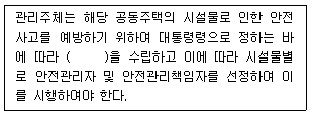
- 정답 : 안전관리계획
- 본 문제는 주관식입니다. 1번을 누르면 정답 처리 됩니다.
- 본 문제는 주관식입니다. 1번을 누르면 정답 처리 됩니다.
- 본 문제는 주관식입니다. 1번을 누르면 정답 처리 됩니다.
- 본 문제는 주관식입니다. 1번을 누르면 정답 처리 됩니다.
(정답률: 알수없음)
34. 다음 ( )안에 알맞은 용어를 쓰시오.
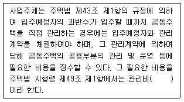
- 정답 : 예금치
- 본 문제는 주관식입니다. 1번을 누르면 정답 처리 됩니다.
- 본 문제는 주관식입니다. 1번을 누르면 정답 처리 됩니다.
- 본 문제는 주관식입니다. 1번을 누르면 정답 처리 됩니다.
- 본 문제는 주관식입니다. 1번을 누르면 정답 처리 됩니다.
(정답률: 알수없음)
35. 다음에서 설명하고 있는 주택법령상의 용어를 쓰시오.
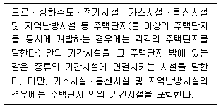
- 정답 : 간선시설
- 본 문제는 주관식입니다. 1번을 누르면 정답 처리 됩니다.
- 본 문제는 주관식입니다. 1번을 누르면 정답 처리 됩니다.
- 본 문제는 주관식입니다. 1번을 누르면 정답 처리 됩니다.
- 본 문제는 주관식입니다. 1번을 누르면 정답 처리 됩니다.
(정답률: 알수없음)
36. 다음에서 설명하고 있는 건축법령상의 용어를 쓰시오.
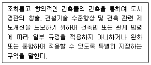
- 정답 : 특별건축구역
- 본 문제는 주관식입니다. 1번을 누르면 정답 처리 됩니다.
- 본 문제는 주관식입니다. 1번을 누르면 정답 처리 됩니다.
- 본 문제는 주관식입니다. 1번을 누르면 정답 처리 됩니다.
- 본 문제는 주관식입니다. 1번을 누르면 정답 처리 됩니다.
(정답률: 알수없음)
37. 건축물의 대지가 지역ㆍ지구 또는 구역에 걸치는 경우의 조치에 관한 건축법 제54조 제2항의 규정이다. 다음 ( )안에 알맞은 용어를 쓰시오.
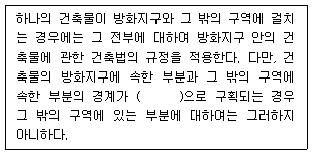
- 정답 : 방화벽
- 본 문제는 주관식입니다. 1번을 누르면 정답 처리 됩니다.
- 본 문제는 주관식입니다. 1번을 누르면 정답 처리 됩니다.
- 본 문제는 주관식입니다. 1번을 누르면 정답 처리 됩니다.
- 본 문제는 주관식입니다. 1번을 누르면 정답 처리 됩니다.
(정답률: 알수없음)
38. 도시 및 주거환경정비법상 시공자의 선정 등에 관한 내용이다. 다음 ( )안에 알맞은 용어를 쓰시오.
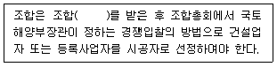
- 정답 : 설립인가
- 본 문제는 주관식입니다. 1번을 누르면 정답 처리 됩니다.
- 본 문제는 주관식입니다. 1번을 누르면 정답 처리 됩니다.
- 본 문제는 주관식입니다. 1번을 누르면 정답 처리 됩니다.
- 본 문제는 주관식입니다. 1번을 누르면 정답 처리 됩니다.
(정답률: 알수없음)
39. 임대주택법 제3조의 규정이다. 다음 ( )안에 알맞은 법률명을 쓰시오.
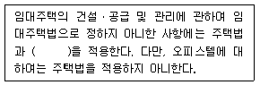
- 정답 : 주택임대차보호법
- 본 문제는 주관식입니다. 1번을 누르면 정답 처리 됩니다.
- 본 문제는 주관식입니다. 1번을 누르면 정답 처리 됩니다.
- 본 문제는 주관식입니다. 1번을 누르면 정답 처리 됩니다.
- 본 문제는 주관식입니다. 1번을 누르면 정답 처리 됩니다.
(정답률: 알수없음)
40. 건축물의 열손실방지에 관한 건축법 제64조의2의 규정이다. 다음 ( )안에 알맞은 용어를 쓰시오.
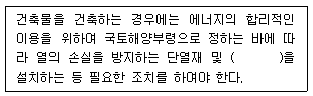
- 정답 : 방습층
- 본 문제는 주관식입니다. 1번을 누르면 정답 처리 됩니다.
- 본 문제는 주관식입니다. 1번을 누르면 정답 처리 됩니다.
- 본 문제는 주관식입니다. 1번을 누르면 정답 처리 됩니다.
- 본 문제는 주관식입니다. 1번을 누르면 정답 처리 됩니다.
(정답률: 알수없음)
41. 공동주거생활에 있어 발생할 수 있는 분쟁에 관한 설명으로 옳지 않은 것은?
- 정해진 관리규약 이외에 주민회의에서 결정된 사항들도 기록으로 남겨서 문제가 생겼을 때 이를 근거로 조정해야 분쟁을 줄일 수 있다.
- 분쟁을 줄이기 위해서는 주민 모두가 관리규약을 준수하도록 노력하여야 한다.
- 분쟁해결을 위한 법적소송은 공동체가 겪게 되는 각종 분쟁의 선행적 해결방법임을 인식하고 모든 문제를 합의로 해결하는 방법보다 먼저 활용되어야 한다.
- 노무ㆍ인사 등과 관련된 법적 분쟁은 대체로 계약에 의한 관계성립을 기반으로 하기 때문에 법원이 판결을 내리는데 있어서 이에 관한 절차의 합리성을 중요하게 보는 편이다.
- 무엇보다도 조직 내에서 구성원 간 분쟁을 최소화하려면 의사소통이 원활하게 이루어져야 한다.
(정답률: 알수없음)
42. 공동주거와 정보 네트워크에 관한 설명으로 옳지 않은 것은?
- 공동주택은 양적 팽창과 더불어 시설ㆍ설비 등 질적 측면의 발달도 함께 병행되었는데, 컴퓨터와 인터넷을 이용한 공동주거의 정보 네트워크화가 그 한 예이다.
- 초고속 정보통신 건물 인증제도는 일정기준 이상의 구내 정보통신 설비를 갖춘 건물에 대해 국가가 직접 인증을 부여해 줌으로써 건설업계가 신축건물에 대해 구내 통신망의 고도화에 적극적으로 참여하도록 유도하는 제도이다.
- 초고속 정보통신 건물인증을 획득한 공동주택은 이를 홍보함으로써 분양을 촉진할 수 있다.
- 홈 네트워크는 가정에서 유ㆍ무선 인터넷 등을 통해 주요 가전제품을 제어하고 기기 간에 콘텐츠를 공유할 수 있는 물리적 네트워크 기술이다.
- 건축법에 의한 공동주택 중 10세대로 구성된 건축물 또는 업무시설 중 연면적 3,000m2인 건축물은 초고속 정보통신 건물 인증대상이다.
(정답률: 알수없음)
43. 주택법령상 관리주체에 관한 설명으로 옳지 않은 것은?
- 관리주체는 장기수선충당금을 사용하는 장기수선공사를 시ㆍ도지사가 고시하는 계약의 방법으로 사업자를 선정하고 집행하여야 한다.
- 관리주체는 매 회계연도마다 사업실적서 및 결산서를 작성하여 회계연도 종료 후 2개월 이내에 입주자대표회의에 제출하여야 한다.
- 관리주체는 공동주택의 공용부분의 유지ㆍ보수 및 안전관리 업무를 행한다.
- 관리주체는 관리비등의 부과내역을 그 공동주택의 인터넷 홈페이지 또는 게시판에 게시하거나 입주자등에게 개별 통지하여야 한다. 다만, 입주자등의 세대별 사용내역 등 사생활 침해의 우려가 있는 것은 공개하지 아니한다.
- 자치관리기구의 대표자인 공동주택의 관리사무소장은 관리주체에 해당한다.
(정답률: 알수없음)
44. 주택법령상 다음의 경력을 갖춘 주택관리사보 중 주택관리사 자격증을 교부받을 수 있는 경우를 모두 고른 것은? (단, 아래의 경력은 주택관리사보 자격시험에 합격한 후의 경력을 말함)
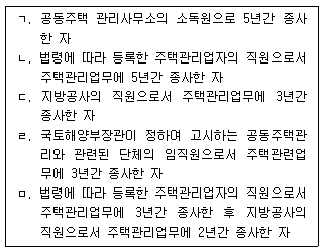
- ㄱ, ㄷ
- ㄱ, ㅁ
- ㄴ, ㄹ
- ㄴ, ㅁ
- ㄷ, ㄹ
(정답률: 알수없음)
45. 주택법령상 협회의 공제사업에 관한 설명으로 옳은 것은?
- 협회는 공제사업을 하려면 공제규정을 제정하여 시ㆍ도지사의 승인을 받아야 한다.
- 협회는 공제사업을 다른 회계와 구분하지 않고 동일한 회계로 관리하여야 한다.
- 「금융위원회의 설치 등에 관한 법률」에 따른 금융감독원 원장은 시장ㆍ군수 또는 구청장이 요청한 경우에는 협회의 공제사업에 관하여 검사를 할 수 있다.
- 공제규정에는 공제사고 발생률 및 공제금 지급액 등을 종합적으로 고려하여 정한 공제료 수입액의 100분의 5에 해당하는 책임준비금의 적립비율을 포함하여야 한다.
- 공제규정에는 공제사업을 손해배상기금과 복지기금으로 구분하여 각 기금별 목적 및 회계원칙에 부합되는 세부기준을 마련한 회계기준을 포함하여야 한다.
(정답률: 알수없음)
46. 임대주택법령상 특별수선충당금에 관한 설명으로 옳은 것은?
- 임대사업자가 임대의무기간이 지난 후 건설임대주택을 분양전환하려면 적립한 특별수선충당금을「주택법」에 따라 최초로 구성되는 관리사무소장에게 넘겨주어야 한다.
- 임대사업자가 국가ㆍ지방자치단체ㆍ한국토지주택공사 또는 지방공사인 경우에는 특별수선충당금을 단독 명의로 금융회사 등에 예치하여 따로 관리할 수 있다.
- 임대사업자는 특별수선충당금을 사용하려면 미리 해당 임대주택이 있는 곳을 관할하는 시장ㆍ군수 또는 구청장의 승인을 받아야 한다.
- 관리사무소장은 국토해양부령으로 정하는 방법에 따라 임대사업자의 특별수선충당금 적립 여부, 적립금액 등을 관할 시ㆍ도지사에게 보고하여야 한다.
- 관리사무소장은 특별수선충당금 적립 현황을 매1년 단위로 연1회 적립기간 종료 후 다음 달 말일까지 시ㆍ도지사에게 보고하여야 한다.
(정답률: 알수없음)
47. 주택법령상 주택관리업을 등록하고자 하는 자가 반드시 확보해야 할 기술능력에 해당하는 기술자의 기준으로 옳지 않은 것은? (단, 아래의 기술자는 각각 상시 근무하는 사람을 말하며, 관련법에 따라 자격정지 또는 업무정지처분을 받지 않았음)
- 연료사용기기 취급관련 기술자 - 열관리산업기사 이상의 기술자 1인 이상
- 고압가스관련 기술자 - 가스기능사의 자격을 가진 자 1인 이상
- 전기분야 기술자 - 전기기능사 1인 이상
- 연료사용기기 취급관련 기술자 - 보일러 시공ㆍ취급기능사 1인 이상
- 위험물취급관련 기술자 - 위험물관리기능사 이상의 기술자 1인 이상
(정답률: 알수없음)
48. 임대주택법령상 임대주택의 관리에 관한 설명으로 옳지 않은 것은?
- 임차인 또는 임차인대표회의는 시장ㆍ군수ㆍ구청장에게 공인회계사등의 선정을 의뢰할 수 있고, 회계감사 비용도 시장ㆍ군수ㆍ구청장이 부담한다.
- 임대사업자는 임차인이 내야 하는 전기료ㆍ수도료를 임차인을 대행하여 징수권자에게 낼 수 있다.
- 임대사업자는 인양기 등의 사용료를 해당 시설의 사용자에게 따로 부과할 수 있다.
- 임대사업자는 산정ㆍ징수한 관리비와 사용료의 징수 및 그 사용명세에 관한 장부를 따로 작성하고 증명자료와 함께 보관하여, 임차인 또는 임차인대표회의가 열람할 수 있게 하여야 한다.
- 임대사업자는 임차인으로부터 임대주택의 관리에 필요한 경비를 받을 수 있다.
(정답률: 알수없음)
3과목: 주택관리관계법규(주관식)
49. 최저임금법령에 관한 설명으로 옳은 것은?
- 최저임금으로 정한 금액은 시간ㆍ일ㆍ주 또는 월을 단위로 하여 정한다. 이 경우 일ㆍ주 또는 월을 단위로 하여 최저임금액을 정할 때에는 시간급으로도 표시하여야 한다.
- 최저임금에 관한 심의와 그 밖에 최저임금에 관한 중요 사항을 심의하기 위하여 고용노동부에 근로감독위원회를 둔다.
- 고용노동부장관이 고시한 최저임금은 당해 연도 1월 1일부터 효력이 발생한다. 다만, 고용노동부장관은 사업의 종류별로 임금교섭시기 등을 고려하여 필요하다고 인정하면 효력발생 시기를 따로 정할 수 있다.
- 도급으로 사업을 행하는 경우 도급인이 책임져야 할 사유로 수급인이 근로자에게 최저임금액에 미치지 못하는 임금을 지급한 경우 도급인이 책임을 져야 하며 수급인에게 책임을 물을 수 없다.
- 최저임금의 적용을 받는 사용자는 대통령령으로 정하는 바에 따라 해당 최저임금을 그 사업의 근로자가 쉽게 볼 수 있는 장소에 게시하거나 그 외의 적당한 방법으로 근로자에게 널리 알려야 한다. 이 규정을 위반할 경우에는 500만원의 과태료에 처한다.
(정답률: 알수없음)
50. 산업재해보상보험법령에 관한 설명으로 옳지 않은 것은?
- 요양급여를 받은 자가 치유 후 요양의 대상이 되었던 업무상의 부상 또는 질병이 재발하거나 치유 당시보다 상태가 악화되어 이를 치유하기 위한 적극적인 치료가 필요하다는 의학적 소견이 있으면 다시 요양급여를 받을 수 있다.
- 휴업급여는 업무상 사유로 부상을 당하거나 질병에 걸린 근로자에게 요양으로 취업하지 못한 기간에 대하여 지급하되, 1일당 지급액은 평균임금의 100분의 70에 상당하는 금액으로 한다. 다만, 취업하지 못한 기간이 3일 이내이면 지급하지 아니한다.
- 장해보상연금, 유족보상연금, 진폐보상연금 또는 진폐유족연금의 지급은 그 지급사유가 발생한 달의 다음 달 초일부터 시작되며, 그 지급받을 권리가 소멸한 달의 말일에 끝난다.
- 장해급여는 이 법에서 정한 장해등급에 따라 장해보상연금 또는 장해보상일시금으로 한다.
- 산업재해보상보험법령은「주택법」에 따른 주택건설사업자가 아닌 자가 시공하는 연면적이 300m2인 건축물의 건축공사에는 적용되지 않는다.
(정답률: 알수없음)
51. 고용보험법령에 관한 설명으로 옳지 않은 것은?
- 실업의 인정을 받으려는 수급자격자는 이 법에 따라 실업의 신고를 한 날부터 계산하기 시작하여 1주부터 4주의 범위에서 직업안정기관의 장이 지정한 날에 출석하여 재취업을 위한 노력을 하였음을 신고하여야 한다.
- 구직급여의 산정 기초가 되는 임금일액은 수급자격의 인정과 관련된 마지막 이직 당시「근로기준법」에 따라 산정된 통상임금으로 한다.
- 피보험자가 이 법에 따른 적용 제외 근로자에 해당하게 된 경우에는 그 적용제외 대상자가 된 날에,「고용보험 및 산업재해보상보험의 보험료징수 등에 관한 법률」에 따라 보험관계가 소멸한 경우에는 그 보험관계가 소멸한 날에 피보험자격을 상실한다.
- 수급자격자가 소정급여일수 내에 임신ㆍ출산ㆍ육아의 사유로 수급기간을 연장한 경우에는 그 기간만큼 구직급여를 유예하여 지급한다.
- 직업안정기관의 장은 거짓으로 구직급여를 지급받은 자에게 지급받은 전체 구직급여의 전부 또는 일부의 반환을 명할 수 있다.
(정답률: 알수없음)
52. 국민연금법령에 관한 설명으로 옳지 않은 것은?
- 연금은 지급하여야 할 사유가 생긴 날이 속하는 달의 다음 달부터 수급권이 소멸한 날이 속하는 달까지 지급한다.
- 국민연금공단은 수급권이 소멸 또는 정지된 급여를 받은 자에 대하여 지급한 금액에 대통령령으로 정하는 이자를 더하여 환수하여야 한다.
- 가입 중에 생긴 질병이나 부상으로 완치된 후에도 신체상 또는 정신상의 장애가 있는 자에 대하여는 그 장애가 계속되는 동안 장애 정도에 따라 장애연금을 지급한다.
- 가입자 또는 가입자였던 자가 고의로 질병ㆍ부상 또는 그 원인이 되는 사고를 일으켜 그로 인하여 장애를 입은 경우에는 그 장애를 지급 사유로 하는 장애연금을 지급하지 아니할 수 있다.
- 심사청구에 대한 결정에 불복하는 자는 그 결정통지를 받은 날부터 90일 이내에 국민연금재심사위원회에 재심사를 청구할 수 있다.
(정답률: 알수없음)
53. 주택법령상 관리주체가 폐쇄회로 텔레비전의 촬영자료를 타인에게 열람하게 하거나 제공할 수 있는 예외적인 규정으로 옳지 않은 것은?
- 정보주체에게 열람 또는 제공하는 경우
- 정보주체의 동의가 있는 경우
- 입주자대표회의의 요청이 있는 경우
- 범죄에 대한 재판업무수행을 위하여 필요한 경우
- 범죄의 수사와 공소의 제기 및 유지에 필요한 경우
(정답률: 알수없음)
54. 국민건강보험법령상 피부양자가 될 수 없는 자는?
- 직장가입자의 배우자
- 직장가입자의 직계존속
- 직장가입자의 배우자의 직계비속
- 직장가입자의 직계비속의 배우자
- 직장가입자의 형제의 배우자
(정답률: 알수없음)
55. 주택법령상 관리비등에 관한 설명이다. 옳은 것으로만 짝지어진 것은?
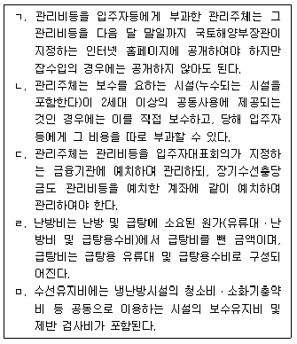
- ㄱ, ㄴ
- ㄱ, ㄹ
- ㄴ, ㄷ
- ㄴ, ㅁ
- ㄷ, ㄹ
(정답률: 알수없음)
56. 주택법령상 공동주택의 관리주체는 입주자 및 사용자가 납부하는 사용료 등을 대행하여 납부할 수 있다. 그 대상이 되는 사용료 등으로 옳은 것으로만 짝지어진 것은?
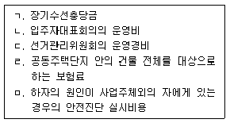
- ㄱ, ㄴ, ㄷ
- ㄱ, ㄴ, ㅁ
- ㄱ, ㄹ, ㅁ
- ㄴ, ㄷ, ㄹ
- ㄷ, ㄹ, ㅁ
(정답률: 알수없음)
57. 다음 급수설비의 기구 중 공중용 기구 급수부하단위가 가장 큰 것은?
- 대변기 세정탱크
- 대변기 세정밸브
- 세면기 급수전
- 욕조 급수전
- 샤워 혼합밸브
(정답률: 알수없음)
58. 자동화재탐지설비에서 감지기에 관한 내용 중 옳지 않은 것은?
- 열전도율이 낮아야 한다.
- 열용량이 적어야 한다.
- 수열면적이 커야 한다.
- 보상식감지기는 차동식의 단점을 보완한 것이다.
- 열의 흡수가 용이한 표면 상태이어야 한다.
(정답률: 알수없음)
59. 고온수를 사용하는 지역난방설비의 특성 중 옳지 않은 것은?
- 축열조를 활용하여 지역난방플랜트의 효율을 적정하게 유지할 수 있다.
- 장치의 열용량이 작으므로 간헐운전에 유리하다.
- 대기오염을 줄일 수 있다.
- 부하변동에 따라 적정수온의 열매를 보내주므로 효율이 높다.
- 배관의 부식이 적다.
(정답률: 알수없음)
60. 다중이용시설 등의 실내공기질관리법령상 신축 공동주택의 실내공기질 측정항목이 아닌 것은?
- 자일렌
- 벤젠
- 라돈
- 에틸벤젠
- 스티렌
(정답률: 알수없음)
61. 배관지지 장치 중 리지드 행거(rigid hanger)에 관한 설명으로 옳은 것은?
- 관의 수직방향 변위가 없는 곳에 사용하는 장치이다.
- 관이 응력을 받아서 휘어지는 것을 방지하고 팽창시 움직임을 바르게 유도하는 장치이다.
- 관의 진동을 방지하거나 감쇠시키는 장치이다.
- 관의 이동이나 회전을 방지하기 위한 지지점을 완전히 고정시키는 장치이다.
- 관이 회전은 되지만 직선운동을 방지하는 장치이다.
(정답률: 알수없음)
62. 평균 BOD 200ppm인 오수가 1,500m3/d 유입되는 오수정화조의 1일 유입 BOD부하[kg/d]는 얼마인가?
- 0.3
- 3
- 30
- 300
- 3,000
(정답률: 알수없음)
63. 유량 280ℓ/min, 유속 3m/sec 일 때 관(pipe)의 규격으로 가장 적합한 것은?
- 20A
- 25A
- 32A
- 50A
- 65A
(정답률: 알수없음)
64. 배수 및 통기배관 시공상의 주의사항으로 옳지 않은 것은? (문제 오류로 실제 시험에서는 4, 5번이 정답처리 되었습니다. 여기서는 4번을 누르면 정답 처리 됩니다.)
- 발포 존(zone)에서는 기구 배수관이나 배수수평지관을 접속하지 않도록 한다.
- 간접배수가 불가피한 곳에서는 배수구 공간을 충분히 두어야 한다.
- 배수관은 자정작용이 있어야 하므로, 0.6m/s 이상의 유속을 유지할 수 있도록 구배가 되어야 한다.
- 통기관은 넘침선까지 올려 세운 다음 배수 수직관에 접속한다.
- 배수 및 통기수직주관은 되도록 수리 및 점검을 용이하게 하기 위하여 파이프 샤프트 바깥에 배관한다.
(정답률: 알수없음)
4과목: 공동주택관리실무(주관식)
65. 다음 중 주택법령상 사업주체가 보수책임을 부담하는 시설공사별 하자담보책임기간이 나머지와 다른 것은?
- 대지조성공사 중 옹벽공사
- 옥외급수ㆍ위생관련공사 중 지하저수조공사
- 급ㆍ배수 위생설비공사 중 위생기구설비공사
- 마감공사 중 타일공사
- 지붕 및 방수공사 중 지붕공사
(정답률: 알수없음)
66. 서어징(surging) 현상에 관한 설명으로 옳은 것은?
- 물이 관속을 유동하고 있을 때 흐르는 물속 어느 부분의 정압이 그때 물의 온도에 해당하는 증기압 이하로 되면 부분적으로 증기가 발생하는 현상을 말한다.
- 관 속을 충만하게 흐르고 있는 액체의 속도를 급격히 변화시키면 액체에 심한 압력의 변화가 발생하는 현상을 말한다.
- 펌프와 송풍기 등이 운전 중에 한숨을 쉬는 것과 같은 상태가 되며 송출압력과 송출유량 사이에 주기적인 변동이 일어나는 현상을 말한다.
- 비등점이 낮은 액체 등을 이송할 경우 펌프의 입구 측에서 발생되는 현상으로 일종의 액체의 비등현상을 말한다.
- 습기가 많고 실온이 높을 경우 배관 속에 온도가 낮은 유체가 흐를 때 관 외벽에 공기 중의 습기가 응축하여 건물의 천정이나 벽에 얼룩이 생기는 현상을 말한다.
(정답률: 알수없음)
67. 난방 시 히트펌프의 성적계수(COP)에 관한 설명으로 옳은 것은?
- 응축기의 방열량을 증발기의 흡수열량으로 나눈 값이다.
- 응축기의 방열량을 압축기의 압축일로 나눈 값이다.
- 증발기의 흡수열량을 압축기의 압축일로 나눈 값이다.
- 압축기의 압축일을 증발기의 흡수열량으로 나눈 값이다.
- 증발기의 흡수열량을 응축기의 방열량으로 나눈 값이다.
(정답률: 알수없음)
68. 유량 360ℓ/min, 전양정 50mAq, 펌프효율 70%인 경우 소요동력[kW]은 약 얼마인가? (단, 여유율은 고려하지 않음)
- 4.2
- 5.2
- 6.2
- 7.2
- 8.2
(정답률: 알수없음)
69. 역률에 관한 설명으로 옳은 것은?
- 무효전력에 대한 유효전력의 비를 말한다.
- 역률을 개선하면 설비용량의 여유도가 감소한다.
- 백열전등이나 전기히터(electric heater)의 역률은 100%에 가깝다.
- 역률은 부하의 종류와 관계가 없다.
- 역률을 개선하면 선로에 흐르는 전류가 증가한다.
(정답률: 알수없음)
70. 전기사업법령상 전기안전관리자의 교육에 관한 내용으로 옳지 않은 것은?
- 전기안전관리자를 선임한 자는 정당한 사유 없이 안전관리교육을 받지 아니한 전기안전관리자를 해임하여야 한다.
- 전기안전관리자 선임기간이 5년 미만인 사람은 2년마다 1회 이상 안전관리교육을 받아야 한다.
- 전기안전관리자로 처음 선임된 사람은 선임된 날부터 6개월 이내에 특별교육을 받아야 한다.
- 교육기관은 교육신청이 있을 때에는 교육 실시 10일전까지 교육대상자에게 교육장소와 교육날짜를 통보해야 한다.
- 교육과정별 1회 교육은 각각 21시간 이상이어야 한다.
(정답률: 알수없음)
71. 시설물의 안전관리에 관한 특별법령상 1종 및 2종시설물의 범위와 안전점검의 실시 시기에 관한 내용으로 옳지 않은 것은?
- 16층 이상의 공동주택은 2종시설물이다.
- 21층 이상 또는 연면적 5만제곱미터 이상인 공동주택 외의 건축물은 1종시설물이다.
- 건축물 중 주상복합건축물은 공동주택 외의 건축물로 본다.
- 공동주택의 정기점검은 반기마다 실시하며 주택법령상 안전점검으로 갈음한다.
- 건축물의 연면적은 지하층을 제외한 동별로 계산한다.
(정답률: 알수없음)
72. 고가수조방식에 관한 일반적 사항 중에서 옳지 않은 것은?
- 저수조를 상수용으로 사용할 때는 넘침관과 배수관을 간접배수방식으로 배관해야 한다.
- 단수 시에도 일정량의 급수를 계속할 수 있다.
- 수압이 0.4MPa을 초과하는 층이나 구간에는 감압밸브를 설치하여 적정압력으로 감압이 이루어지도록 하여야 한다.
- 고가수조의 필요높이를 산정할 때는 가장 수압이 높은 지점을 기준으로 최소 필요높이를 산정하여야 한다.
- 스위치 고장으로 고가수조에 양수가 계속될 경우 수조에서 넘쳐흐르는 물을 배수하는 넘침관은 양수관 직경의 2배 크기이다.
(정답률: 알수없음)
73. 노동조합 및 노동관계조정법령상 구제신청에 관한 내용이다. ( )안에 들어갈 숫자를 쓰시오.
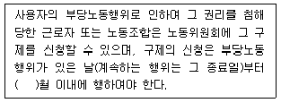
- 정답 : 3
- 본 문제는 주관식입니다. 1번을 누르면 정답 처리 됩니다.
- 본 문제는 주관식입니다. 1번을 누르면 정답 처리 됩니다.
- 본 문제는 주관식입니다. 1번을 누르면 정답 처리 됩니다.
- 본 문제는 주관식입니다. 1번을 누르면 정답 처리 됩니다.
(정답률: 알수없음)
74. 다음과 같은 조건에서 아파트 공급면적이 200m2인 세대의 월간 세대별 장기수선충당금을 구하시오.
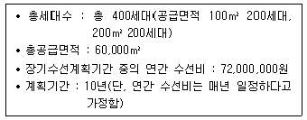
- 정답 : 20,000(원)
- 본 문제는 주관식입니다. 1번을 누르면 정답 처리 됩니다.
- 본 문제는 주관식입니다. 1번을 누르면 정답 처리 됩니다.
- 본 문제는 주관식입니다. 1번을 누르면 정답 처리 됩니다.
- 본 문제는 주관식입니다. 1번을 누르면 정답 처리 됩니다.
(정답률: 알수없음)
75. 다음에서 설명하고 있는 주택법령상의 용어를 쓰시오.
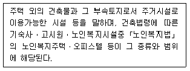
- 정답 : 준주택
- 본 문제는 주관식입니다. 1번을 누르면 정답 처리 됩니다.
- 본 문제는 주관식입니다. 1번을 누르면 정답 처리 됩니다.
- 본 문제는 주관식입니다. 1번을 누르면 정답 처리 됩니다.
- 본 문제는 주관식입니다. 1번을 누르면 정답 처리 됩니다.
(정답률: 알수없음)
76. 주택법령상 하자보수보증금의 반환에 관한 내용이다. ( )안에 들어갈 숫자를 순서대로 각각 쓰시오.
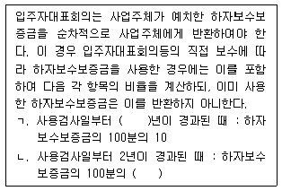
- 정답 : 1, 25
- 본 문제는 주관식입니다. 1번을 누르면 정답 처리 됩니다.
- 본 문제는 주관식입니다. 1번을 누르면 정답 처리 됩니다.
- 본 문제는 주관식입니다. 1번을 누르면 정답 처리 됩니다.
- 본 문제는 주관식입니다. 1번을 누르면 정답 처리 됩니다.
(정답률: 알수없음)
77. 소방시설 설치ㆍ유지 및 안전관리에 관한 법령상의 내용이다. ( )안에 들어갈 용어를 쓰시오.
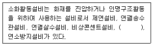
- 정답 : 무선통신보조설비
- 본 문제는 주관식입니다. 1번을 누르면 정답 처리 됩니다.
- 본 문제는 주관식입니다. 1번을 누르면 정답 처리 됩니다.
- 본 문제는 주관식입니다. 1번을 누르면 정답 처리 됩니다.
- 본 문제는 주관식입니다. 1번을 누르면 정답 처리 됩니다.
(정답률: 알수없음)
78. 다음에서 설명하고 있는 전기사업법령상의 용어를 쓰시오.
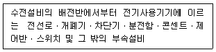
- 정답 : 구내배전설비
- 본 문제는 주관식입니다. 1번을 누르면 정답 처리 됩니다.
- 본 문제는 주관식입니다. 1번을 누르면 정답 처리 됩니다.
- 본 문제는 주관식입니다. 1번을 누르면 정답 처리 됩니다.
- 본 문제는 주관식입니다. 1번을 누르면 정답 처리 됩니다.
(정답률: 알수없음)
79. 다음에서 설명하고 있는 옥내소화전설비의 화재안전기준상의 용어를 쓰시오.
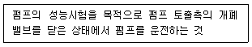
- 정답 : 체절운전
- 본 문제는 주관식입니다. 1번을 누르면 정답 처리 됩니다.
- 본 문제는 주관식입니다. 1번을 누르면 정답 처리 됩니다.
- 본 문제는 주관식입니다. 1번을 누르면 정답 처리 됩니다.
- 본 문제는 주관식입니다. 1번을 누르면 정답 처리 됩니다.
(정답률: 알수없음)
80. 감염병의 예방 및 관리에 관한 법령상의 내용이다. ( )안에 들어갈 숫자를 쓰시오.
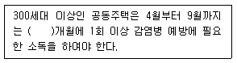
- 정답 : 3
- 본 문제는 주관식입니다. 1번을 누르면 정답 처리 됩니다.
- 본 문제는 주관식입니다. 1번을 누르면 정답 처리 됩니다.
- 본 문제는 주관식입니다. 1번을 누르면 정답 처리 됩니다.
- 본 문제는 주관식입니다. 1번을 누르면 정답 처리 됩니다.
(정답률: 알수없음)